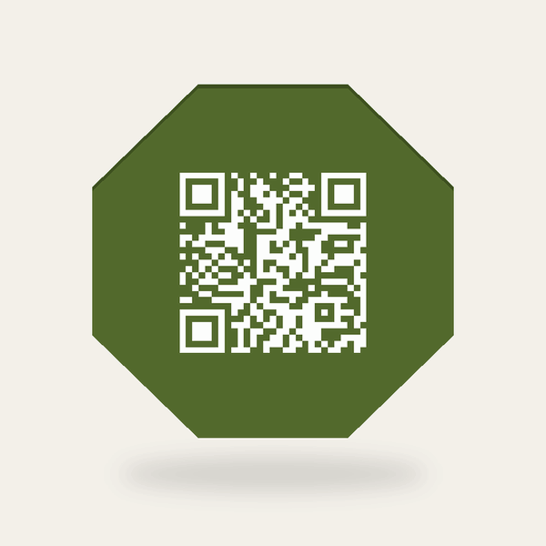

Una carta que cambia con la temporada.
Convierta su carta de papel o PDF en una página rápida, clara y fácil de leer desde el teléfono. Un QR permanente lleva siempre a la misma dirección, aunque cambien los platos, los precios o el horario.
Ver ejemplosVea cómo funciona
Cuatro demostraciones públicas muestran el recorrido completo: elegir idioma, consultar la carta y volver a la misma página cuando el contenido se actualiza.


Un servicio pequeño y claro
En el lanzamiento
- Una dirección permanente y un QR para el local.
- Hasta tres idiomas.
- Platos con nombre y descripción para el cliente, más apoyo en español para el equipo.
- Sus fotografías, una prueba privada y una ronda consolidada de correcciones.
Cada mes
- Incorporación de nuevos platos, actualización de descripciones y cambios de precios, con hasta dos actualizaciones al mes. Todas las solicitudes deben enviarse por escrito, por correo electrónico.
- La misma dirección y el mismo QR, sin rehacer la carta impresa.
- Un registro claro de lo preparado, aprobado, publicado y actualizado.
Su carta web, con un alcance claro
IVA no incluido en todos los precios. Envío de posavasos a España peninsular: 5,95 € adicionales.
Lanzamiento
Una vez por local, con el alcance descrito arriba.
Care
Nuevos platos, cambios de descripciones y precios: hasta dos actualizaciones al mes, solicitadas por escrito por correo electrónico.
Opciones adicionales

Servicios adicionales, con alcance y presupuesto confirmados antes de empezar.
Idioma adicional
50 € por idioma al incorporarlo, más 5 €/mes por idioma para mantenerlo actualizado, además del plan base.
Posavasos QR impresos en 3D
Octágonos básicos de 10 cm, en dos colores. Lote de 20 unidades: 100 €.
Adhesivos QR
Lote de 100 adhesivos QR redondos de vinilo, de 10 cm: 59 € + IVA. Envío presupuestado por separado.
Imágenes de platos con IA
Generación o retoque con inteligencia artificial, a partir de su carta o de fotos de móvil facilitadas por el propietario. Presupuesto según el número de imágenes y el trabajo necesario.
Si ya tiene una carta
También podemos convertir un PDF o fotografías de sus páginas en una carta web. Extraemos el texto o hacemos OCR, comprobamos nombres, descripciones, precios y secciones contra el original, y enviamos una prueba antes de publicar. El presupuesto se calcula por página, para páginas A4 o menores.
Qué no incluye la primera versión
No procesa pedidos ni pagos, no gestiona reservas, facturas o mesas, no incluye analítica ni un panel de edición para el propietario. Si hace falta, podemos estudiar esos servicios por separado.
También se pueden presupuestar aparte la generación o el retoque de imágenes de platos con IA y los posavasos QR impresos en 3D.
Hablemos de su carta
Envíeme su carta actual y los idiomas que necesita. Le confirmaré el alcance y el presupuesto.
Enviar mi carta por email